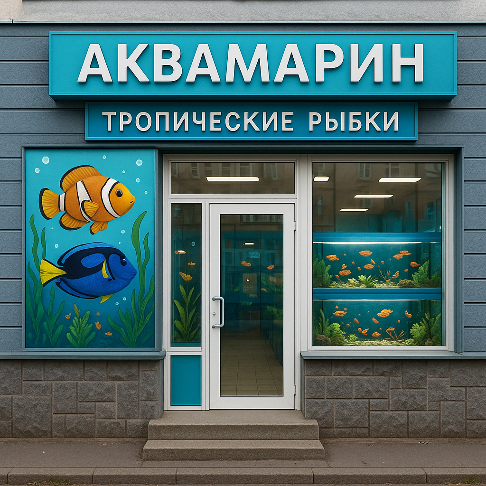

О нашем магазине
Добро пожаловать в "Аквамарин" - мир тропических рыбок! Мы специализируемся на продаже экзотических видов рыб со всего мира. Наш ассортимент включает в себя ярких гуппи, элегантных скалярий, загадочных дискусов и многих других удивительных обитателей подводного мира.
Все наши рыбки содержатся в идеальных условиях и проходят тщательный ветеринарный контроль. Мы сотрудничаем только с проверенными поставщиками и обеспечиваем правильную транспортировку каждого питомца.
Наши консультанты помогут вам подобрать совместимые виды, выбрать необходимое оборудование и создать свой собственный тропический рай! Мы также предоставляем услуги по обслуживанию аквариумов и консультации по уходу за водными обитателями.
Почему выбирают именно нас?
В «Аквамарине» вы найдете только здоровых и активных питомцев. Мы сотрудничаем с проверенными питомниками из Таиланда, Сингапура, Чехии и Индонезии, что гарантирует разнообразие видов и их отличную генетику. Каждая рыбка проходит обязательный 30-дневный карантин под наблюдением ихтиопатолога. Мы не просто продаем — мы заботимся о каждом питомце и даем полную консультацию по его содержанию.
Наш ассортимент
У нас представлены как популярные виды для начинающих аквариумистов — яркие гуппи, грациозные скалярии, забавные сомики-коридорасы, — так и редкие экземпляры для искушенных ценителей. Любителям экзотики предлагаем:
- Рыбка-клоун
- Дискус
- Фронтоза
- Красная гуппи
- Рыбка-петушок
- Скалярия
В наличии

Рыбка-клоун
Дискус
Фронтоза
Красная гуппи
Рыбка-петушок
Скалярия
Эксклюзивные виды по индивидуальному заказу
Мечтаете о редком питомце, которого нет в обычных зоомагазинах? В «Аквамарине» мы находим даже самых эксклюзивных обитателей подводного мира!
Какие редкие виды мы можем привезти:
- Арованы
- Хищные пираньи
- Электрические рыбы
- Редкие сомы-прилипалы
- Карпы кои
- Морские коньки и рыбы-львы
Как работает индивидуальный заказ:
- Консультация — наши специалисты оценят возможность содержания выбранного вида в ваших условиях
- Поиск — мы связываемся с питомниками по всему миру
- Электрические рыбы
- Бронирование — заключаем официальный договор
- Доставка — организуем безопасную транспортировку с соблюдением всех норм
- Адаптация — рыбка проходит карантин в нашем магазине перед передачей вам
О сервисе
Помимо продажи рыбок, мы предлагаем полный спектр услуг для аквариумистов: от проектирования и запуска аквариумов "под ключ" до их регулярного обслуживания. Также проводим консультации по лечению рыб и решению проблем с водной средой. Ваш аквариум будет оставаться красивым и здоровым с нашей помощью!
Наша философия
Мы верим, что аквариум — это искусство. Искусство создавать гармоничный мир, где все обитатели чувствуют себя комфортно. Наши специалисты не только помогут выбрать рыбок, но и научат понимать их потребности, распознавать сигналы и создавать идеальные условия.
Приходите в гости!
Посетите наш магазин на улице Аквариумной, 15. Погрузитесь в атмосферу подводного царства, пообщайтесь с нашими консультантами и найдите своих идеальных питомцев. Для тех, кто далеко, работаем онлайн-консультации и доставка.